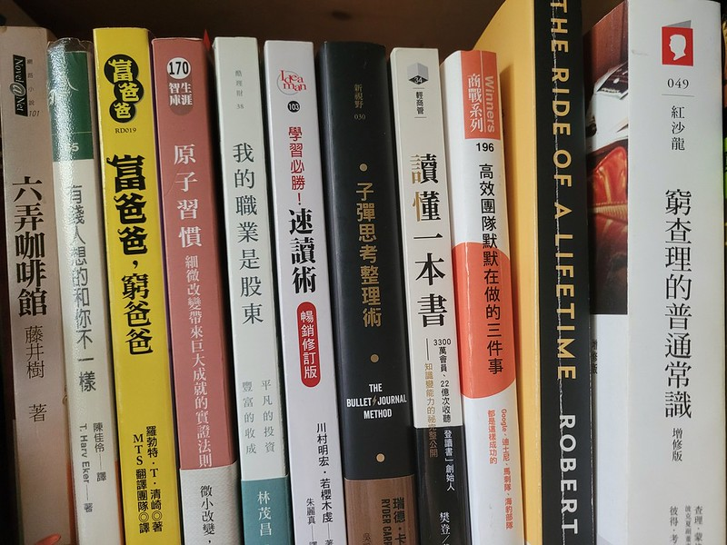

我這輩子遇到的聰明人（來自各行各業的聰明人）沒有不每天閱讀的。 沒有，一個都沒有。
華倫讀書之多，我讀書之多，可能會讓你感到吃驚。我的孩子們都愛開玩笑，覺得我是一本長了兩條腿的書。
By 查理．蒙格
前言
著名畫家李苦禪曾說過：「鳥欲高飛先振翅，人求上進先讀書。」
從比爾蓋茲、巴菲特、查里蒙格、歐巴馬…，世上偉大而具影響力的人，無不飽讀詩書，閱讀的重要性大家都知道
然而一定會有人說，為什麼每年那麼多排行榜書、勵志書、工具書被出版，成功的人還是這麼少？
但當我看到這篇文後，我對閱讀的想法有所改變：
為什麼閱讀對我幫助不大？來看看年收入300萬的人是怎麼看書的
為何開始閱讀
啟發我閱讀的是在去年4月，我在收聽自己滿喜歡的Podcast節目『 大人學的Small Talk 』，其中一集提到我如何選擇、購買、放棄與吸收一本書，裡面有提到國人平均一年只讀兩本書！其實我當下連一年兩本都不到！聽完節目後，想說姑且一試，既然閱讀對人那麼有幫助，那我怎麼能不看書，但沒有抱著會長久閱讀的想法，買了幾本暢銷書就來看看。
起初第一本是「 有錢人跟你想的不一樣 」
這本書告訴我們要培養有錢人的思考模式，舉例 -> 當遇到一個東西很想買，但很昂貴：
窮人會想著：「太貴了，我永遠買不起」
有錢人會想著：「我該如何買得起他」
將問題轉化為該如何去解決問題，而不是無盡的抱怨、責備，書中提到17個有錢人的思維模式。這本書讓我感覺到閱讀是有趣的而且實用，可以影響我的行為模式。
一直持續閱讀習慣到當兵，在當兵期間，由於長時間待命或是等待操課很無聊，閱讀是唯一消遣，不操課就只能看書，站哨時無聊也偷偷拿出書來看，也因此在當兵時鞏固自己閱讀的習慣，而持續維持自己閱讀習慣到現在…
閱讀的好處
想當然閱讀的好處大家聽到不想再聽，而最讓我眼睛發亮的是當我看到
閱讀可使人從「單向度」變成「多向度」：
-
事實：分析決策
-
邏輯：事實間的邏輯為何
-
批判思維：不斷訓練思維方式
以及，之前聽過，未來收入跟閱讀量成正比，我後來去查了一下這個新聞收入越高的人越愛讀書
閱讀建議
在我看到「讀懂一本書」時了解到，自己很常閱讀後就忘記，甚至就算再看一次很多觀念也會再次忘掉，作者說到：「知識的自我反芻：最有效的讀書不是一邊讀一邊畫重點，而是大概間隔一週，邊回憶邊畫心智圖」，也說到講書的重要性，就是能將知識內化成自己的語言再傳遞給他人，自己將是最大的受益者，因此我也開始記錄自己閱讀的書籍，並做重點整理。
但讀者在閱讀時仍要學習分辨，有些自己非常不認同的想法，可以訓練自己思考事情的正反面，還有為何作者想法如此，而自己的想法為何那樣，也許是情境的不同、立場不同、或是扭曲了作者想法等等，謹慎思考作者的論點，培養自己的獨立思考能力。
我的閱讀列表與重點整理 : https://www.notion.so/lawrencekao/1a7fb57a6f3c4e30a8f1f5e45677b129?v=e89018e9e9c54144977390b1195ad432

推薦書單
我最喜愛比爾蓋茲的書單，非常多元，各種面向都有，尤其是對於興趣廣泛的我再適合不過了，而股癌是Podcaster，他的書單也很棒，而查里蒙格是巴菲特身邊非常重要的人，巴菲特常說：「沒有蒙格就沒有我」
此外，最近發現這個Blog所撰寫的閱讀心得與推薦書非常值得 JUJU CHU 愛讀書
推薦整理 Notion
近期有個朋友推薦我，他看完書後都會使用 Notion 記錄自己的筆記，在我看過他的排版還有方便性後，決定使用這個軟體記錄自己的閱讀
其實網路上有許多人分享他的優點，我在這裡就不贅述
如：Notion：使用心得分享
Go and grab a book and read !